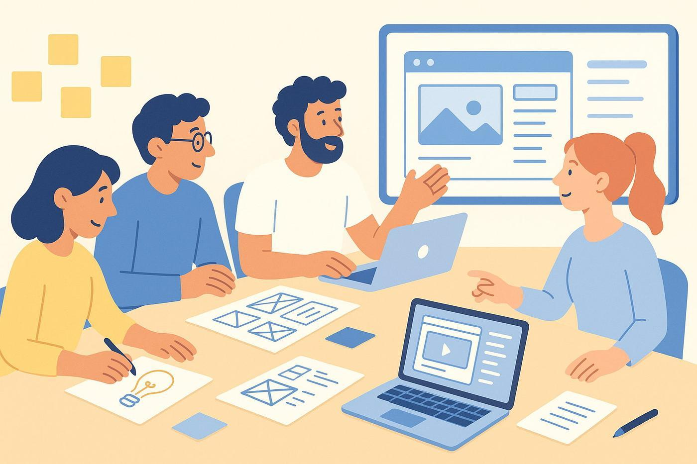
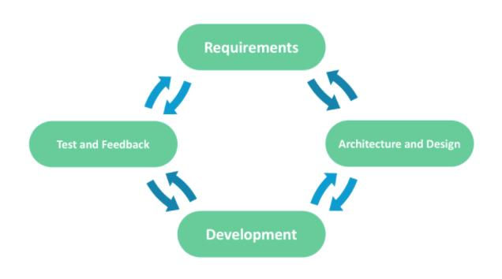
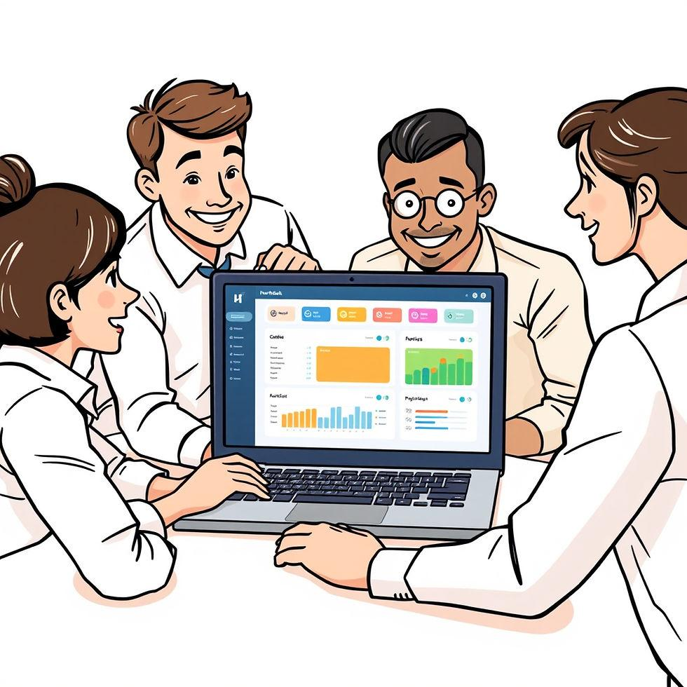

Clients Don't Speak in Frameworks
My experience participating in enterprise software requirement-gathering sessions and understanding the business behind the code.

My Initial Understanding
When I started working as a developer, I used to imagine that clients would provide us with detailed technical requirements.
Something like: use BLoC for state management, build this particular page, follow these colors and themes, display these datasets, use this programming language or framework, integrate this library, and implement these features.
But after getting involved in real-world projects, I realized that things rarely work that way.
Especially when working with enterprise applications, clients don't usually approach software development from a technical perspective.
Clients Think in Business Terms, Not Technical Terms
One of the biggest lessons I have learned from participating in several requirement-gathering sessions is that most clients, particularly those from business backgrounds, communicate in business terms rather than technical terms.
They don't necessarily care whether I use Flutter, React, BLoC, or any particular library or framework. What they care about is the final product.
They want something stable, secure, reliable, functional, and capable of solving their actual business problems.
For example, a client might explain that they need to manage showroom sales, track spare parts inventory, monitor employee attendance, handle finances, or manage vehicle reconditioning.
They explain what their business needs, and it becomes my responsibility, along with the rest of the development team, to understand those needs and translate them into technical solutions.
How I Experienced Requirement Gathering
From my experience, the process usually begins with discussions and meetings between the client and the development team.
During these sessions, we first try to understand the overall purpose and scope of the application.
We discuss things such as:
- What is this application supposed to manage?
- Which business departments will use it?
- Does it involve finance, sales, showroom management, spare parts, or other operations?
- What roles will exist within the application?
- What should managers, employees, and other users be able to access?
- Are there additional operational requirements, such as attendance and leave management?
I noticed that role-based access is particularly important in enterprise applications. For example, a manager might need access to reports, dashboards, and employee information, while an employee might only need access to assigned tasks and personal information.
These discussions help us understand the client's expectations and establish the initial scope of the application.
From Requirements to Development

Once the requirements and project scope are agreed upon, the project manager or team lead distributes the work among the team.
From what I have experienced, the workflow generally follows this sequence:
- UI/UX Design: The designer starts preparing the application's layouts, screens, and user experience.
- Development: Developers begin implementing the agreed features and business logic.
- Testing: Testers verify functionality, identify issues, and check whether the implementation meets the expected requirements.
- Client Demonstration: Once a working version is ready, the team presents the product to the client and collects feedback.
Initially, I thought that once we completed the agreed requirements and delivered the implementation, most of the work would be done.
But that's not always the case.
The Feedback Loop: Where Things Get Interesting

As a developer, I have had the opportunity to participate directly in client meetings, particularly during product demonstrations. This has given me valuable insight into what happens after the initial requirements are translated into working software.
During these demonstrations, clients usually provide additional feedback.
Some sections get accepted, some are rejected, and some require modifications. Certain requirements might change entirely, while others are postponed for future updates.
And from what I have learned, that's completely normal.
After the meeting, the project manager or team lead collects the feedback, identifies the required changes, and distributes the new tasks among the team.
The designers, developers, and testers then repeat their respective workflows.
This cycle continues until the client is satisfied with the product.
What I Learned as a Developer
Before getting involved in these meetings, I primarily viewed software development from a technical perspective. I focused on implementation, programming languages, frameworks, libraries, and solving technical problems.
But participating in requirement-gathering sessions changed how I look at software development.
I learned that understanding the business problem is just as important as knowing how to write the code.
A technically impressive application isn't necessarily a successful product if it doesn't solve the client's actual problems.
I also learned that requirement gathering isn't a one-time activity that ends before development begins. It is an iterative process of understanding business needs, translating them into technical solutions, presenting the results, collecting feedback, and refining the product.
At the end of the day, clients don't buy frameworks, libraries, or programming languages. They invest in solutions to their business problems.
And as a developer, understanding that difference has changed how I approach software development.